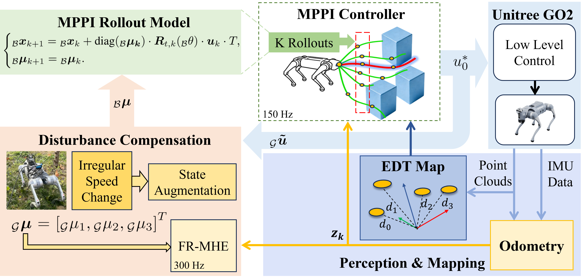

FDC-MPPI: Fast Disturbance-Compensated MPPI for Onboard Quadruped Navigation in Cluttered and Disturbed Environments
This paper has been submitted to the IEEE/RSJ International Conference on INTELLIGENT ROBOTS & SYSTEMS (IROS) 2026
* All author information is removed due to review policy reasons

Abstract
Quadruped robots struggle with reliable autonomous navigation in cluttered, narrow and disturbed environments because robot system and terrain-induced disturbances (e.g., slippage, traction loss, external pushes) cause a time-varying mismatch between navigation model and real system, which degrades model Predictive Path Integral (MPPI) rollouts and leads to oscillations or collisions. This paper presents FDC-MPPI (Fast Disturbance-Compensated MPPI), an integrated planning-control framework that explicitly fuses real-time odometry feedback into the MPPI rollout model via a Fast and Robust Moving Horizon Estimation (FR-MHE) module. FR-MHE estimates disturbance compensation coefficients from the equivalent control input and measured robot pose, maps them to body-frame gains, and embeds them into the MPPI model to correct rollouts online while obstacle costs are efficiently queried from an Euclidean Distance Transform-based distance field. With GPU parallelization and a decoupled control-sampling architecture, FDC-MPPI achieves a 150 Hz onboard update rate on an NVIDIA Jetson Orin NX 16GB (average latency 2.42 ms, FR-MHE 0.84 ms). Comparative Gazebo simulations and real-world experiments on a Unitree GO2 EDU demonstrate substantially improved robustness and safety across slippery slopes, outdoor lawn, and significant external forces, boosting success rates from 10%/25% (sim/real) for the Vanilla MPPI to 100%/90%, while increasing obstacle clearance and reducing trajectory tracking error and curvature—enabling agile, stable, and collision-resistant quadrupedal navigation under severe model mismatch and disturbances.
Contributions
- FDC-MPPI framework: We propose FDC-MPPI, which enhances quadrupedal navigation stability and safety by explicitly integrating a real-time disturbance compensation mechanism into MPPI rollouts.
- FR-MHE for disturbance compensation: We integrate a computationally efficient and robust FR-MHE module with MPPI to actively mitigate environmental perturbations and velocity fluctuations.
- Comparative onboard validation: Extensive simulations and hardware experiments verify algorithm robustness and computational efficiency (2.42ms MPPI computation and 150 Hz) in narrow, cluttered, and disturbed environments.
- Open-source code repository: We will provide an open source implementation of the MPPI-based local obstacle avoidance algorithm for quadruped robots.
COMPARATIVE EXPERIMENTS
A.FDC-MPPI for dynamic obstacle avoidance
Onboard performance of FDC-MPPI during dynamic obstacle avoidance on the Unitree Go2 platform. The system maintains a 150 Hz update rate on the Jetson Orin NX.
B.Continuous and Slippery Slopes
FDC-MPPI (success)
Vanilla-MPPI (rollover)
FDC-MPPI (success)
Vanilla-MPPI (heading deviation)
Vanilla-MPPI (collision)
Vanilla-MPPI (rollover)
C.Outdoor Lawn
When traversing slippery, rain-soaked grassland, the quadruped robot frequently experiences foot sinkage and slippage, and the realized motion may lag behind the commanded velocity.
D.Significant External Forces
Significant external forces cause sudden jumps in the robot’s displacement and velocity. Thanks to the high frequency update mechanism of FDC-MPPI, the robot successfully navigates around obstacles even when subjected to abrupt state changes.